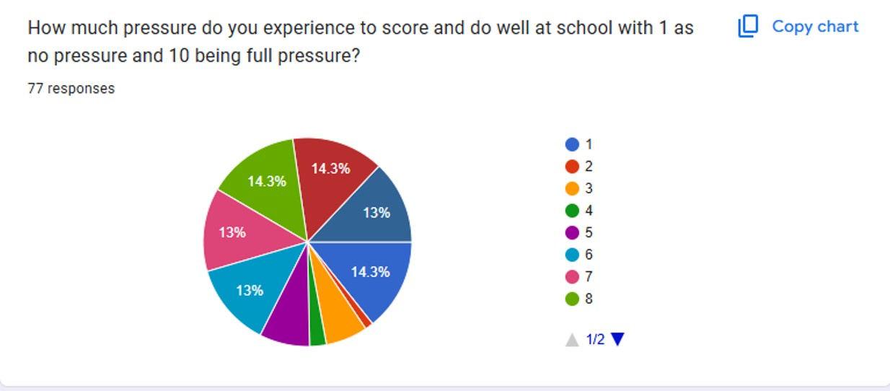
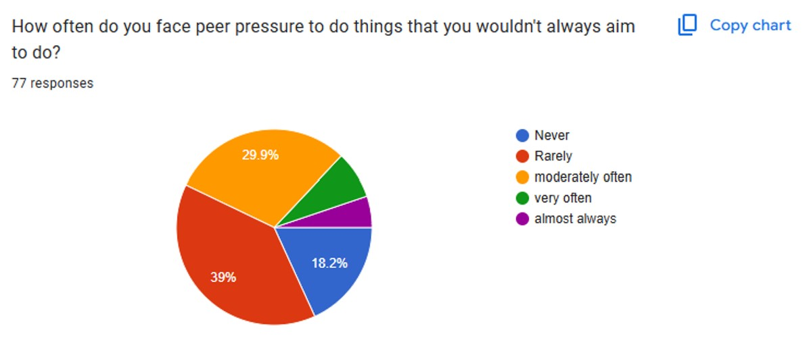
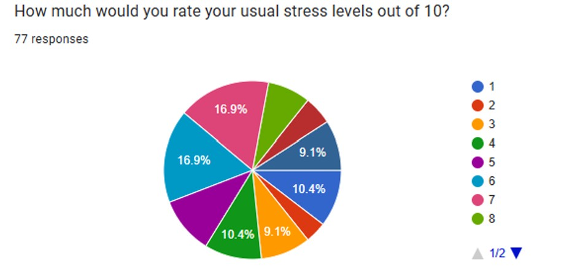
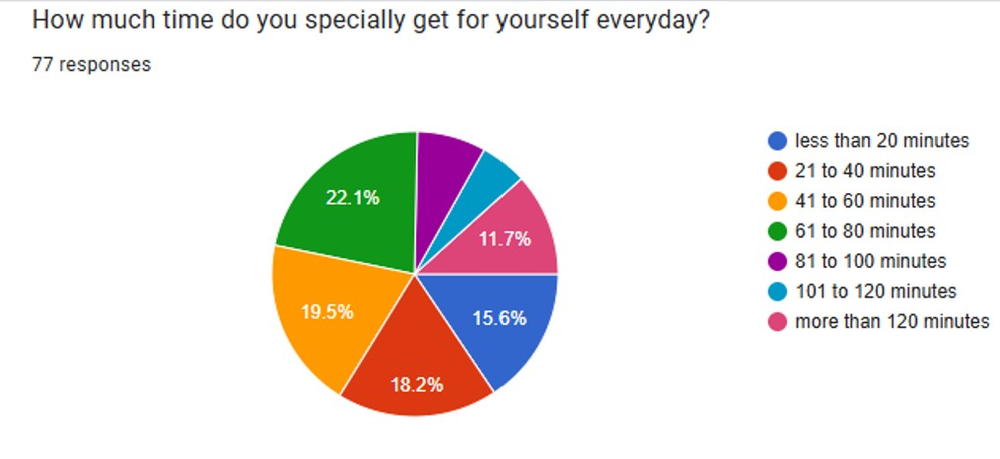
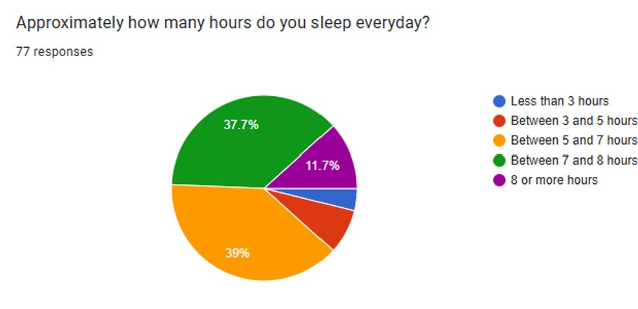

How much pressure do you experience to score and do well at school? 77 students responded, rating their pressure levels between 1 (no pressure) and 10 (full pressure).
How often do you face peer pressure to do things that you wouldn’t always aim to do? The results indicate how frequently students face peer pressure.
How much would you rate your usual stress levels out of 10? Students reported varied levels of stress, indicating the need for better stress management.
How much time do you specially get for yourself every day? The responses reflect how students prioritize personal time amidst busy schedules.
Approximately how many hours do you sleep every day? Sleep is vital for mental and physical health, and the responses highlight students’ sleep patterns.
Based on our primary research, we were able to address as many issues as we possibly could to create a solution using technology: Making learning as addictive as SOCIAL MEDIA! Hence, we developed WorkMate and FlexFit.
Workmate is an app created to be the means for highschool students to achieve the goal of being completely in balance and mentally positive regarding their work. It aims to do three things: Set Goals, Track, Achieve.
WorkMate Screenshot 1: Task Manager to help students regulate mental stress by organizing tasks and staying productive in a healthy manner.
WorkMate Screenshot 2: Custom habit tracker to encourage good habits and track progress with a "habit score" system.
WorkMate Screenshot 3: To-do list maker to help students organize their day and set realistic, achievable goals.
FlexFit is an application based on two specific difficulties of highschool students: "I do not feel like working out when I should" and "I do not have the time to work out" in the most meticulous and gamified manner we could come up with.
FlexFit Screenshot 1: Generates workouts based on time, intensity, and location preferences, ensuring users make the most of their exercise time.
FlexFit Screenshot 2: Turns workouts into a game with daily updates, scores, and levels to keep users consistent and motivated.
We hosted a webinar with expert parent coach and career counsellor ru.pathfinder to spread awareness in the ninth grade batch of students who were just about to enter into what could either be a very stressful and overwhelming period of their lives, or one that is exciting and filled with new accomplishments. Following are a few snaps from the webinar and the interactive game we played after.